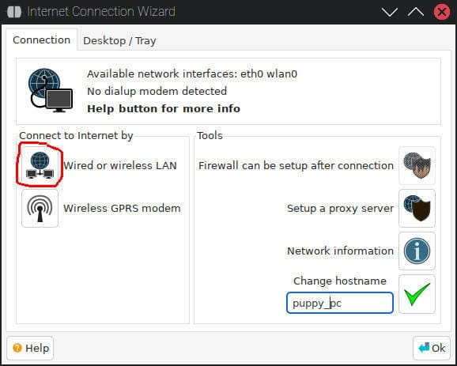
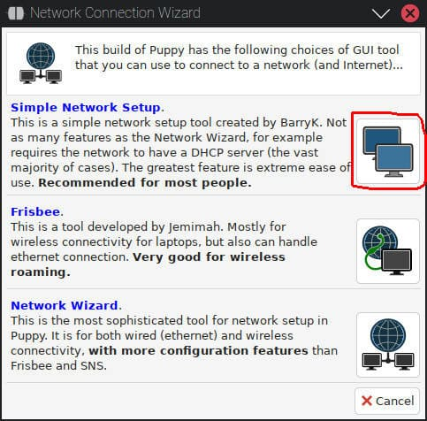
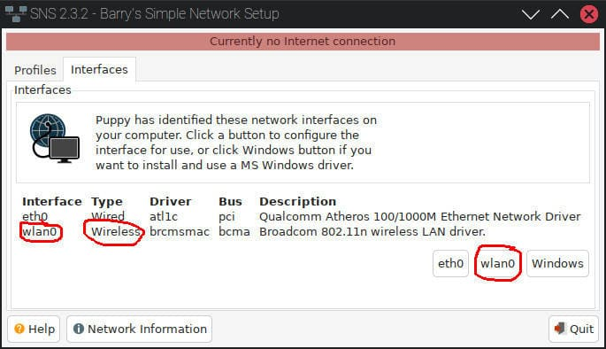
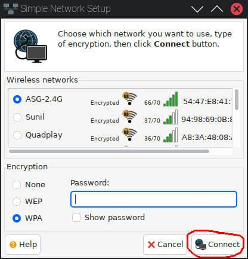
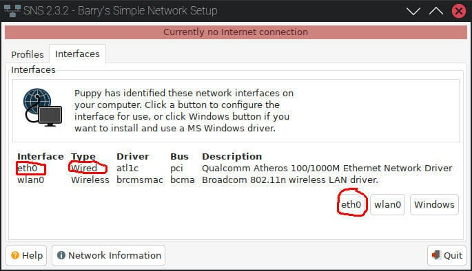

HOWTO: Internet access using SNS
What is SNS?
SNS or Simple Network Setup is a utility designed by BarryK, which can be used to connect to a network easily in PuppyLinux.
How to open up SNS?
Follow these steps to run SNS:-
- Open up Application Menu > Setup > Internet Connection Wizard.
- Click Wired or wireless LAN.
 - Click Simple Network Setup button.
 - This will open up SNS.
How to connect to Wireless Network?
Follow these steps to connect to a wirless network using SNS:-
- Open up SNS (Read how to open up SNS).
- Go to Interfaces tab in the SNS window (if not already opened in that tab).
- You would see names of interfaces and their types. There will be some buttons present at the bottom of the window having the names of the interfaces that were listed above. Click on the button with the name of such an interface, which is listed as wireless one. Most probably, this will be wlan?, where ? is a number.
If no wlan? interface is listed then your wireless is probably not recognized and you should request assistance on the Puppy Linux Forum.
 - A new window will open. Select the network which you want to connect to.
- Select the type of password encryption the network uses (most oftenly WPA).
- Enter the password and click Connect button.
 - You will now be prompted that you have been connected to your network. Now enjoy surfing on the internet!
How to connect to Wired (Ethernet) Network?
Follow these steps to connect to a wired network using SNS:-
- Open up SNS (Read how to open up SNS).
- Go to Interfaces tab in the SNS window (if not already opened in that tab).
- You would see names of interfaces and their types. There will be some buttons present at the bottom of the window having the names of the interfaces that were listed above. Click on the button with the name of such an interface, which is listed as wired one. Most probably, this will be eth?, where ? is a number.
If no eth? interface is listed then your ethernet is probably not recognized and you should request assistance on the Puppy Linux Forum.
 - You will now be prompted that you have been connected to your network. Now enjoy surfing on the internet!